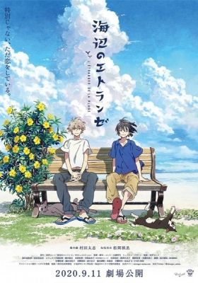
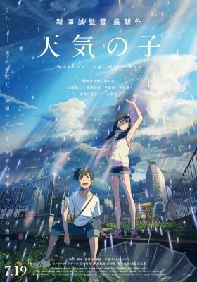

All Time Favorite
Your Name
Your Name is a touching, emotional, dramatic movie about two character, Taki and Mitsuha, who begin waking up in each other's bodies every few days. They learn to work together to make both their lives as normal as possible and eventually, both attempt to visit one another.
Popular Movie List
Whisker
Away
an anime fantasy in which a free-spirited girl nicknamed Muge finds a way to transform into a cat in order to get to know her crush, Hinode, better.
Asasination
Assassination is the willful killing, by a sudden, secret, or planned attack, of a person—especially if prominent or important.
Backflip
depicts the lives of high school boys who are fascinated by rhythmic gymnastics.
Deep sea
Shenxiu lost her mother and has to deal with an uncaring father. On a cruise, she gets swept away by storm and finds a magical submarine restaurant.
Deamon
Slayer
After his family was brutally murdered and his sister turned into a demon, Tanjiro Kamado's journey as a demon slayer began.
final stroke
The new stage to Haruka Nanse is Sydney, before leaving Japan, Haruka accidentally confronts his rival who fought in a tournament.
Gridman
universe
A year has passed since the events of SSSS.Gridman. The world is at peace and no one except for Rikka and Utsumi remembers the kaiju, Gridman, or Akane Shinjou.
hell paradise
The official synopsis of 'Hell's Paradise' reads, "A squad of prisoners and their guards are sent to investigate a mysterious island.
New Releases List
knights of
sidonia
Nagate Tanikaze trains to become a Garde pilot and defend the Sidonia from a hostile alien species called Gauna.
Mirai
a Japanese animated movie about a 4-year-old boy who's bored and upset about being a new big brother and ends up time-traveling to meet family members from the future and past.
Our little
molecules underwent reactions that led to the formation of prebiotic compounds like amino acids.
revengers
sasaki & miyano
Sasaki and Miyano follows the story of two male high school students as their friendship gradually becomes romantic.
summer
ghost
An urban legend speaks of a summer ghost, a spirit girl who appears when fireworks are set off.
suzume
A modern action adventure road story where a 17-year-old girl named Suzume helps a mysterious young man close doors from the other side that are releasing disasters all over in Japan.
swallowtail
butterfly
The swallowtail butterfly Even as caterpillars, they are impressive beasties with bulging horns to frighten predators.
Dark Fantasy Manga
cat returns
After helping a cat, a seventeen-year-old girl finds herself involuntarily engaged to a cat Prince in a magical world where her only hope of freedom lies with a dapper cat statuette come to life.
reltive world
Shin is an ordinary high-school boy living in Tokyo. One day he meets a boy called Jin who looks exactly like him, and claims that he comes from another world.
On an island off the coast of Okinawa, two young men meet on a beach: Shun Hashimoto, a gay novelist and Mio Chibana, a somber high school student.
the stranger
The summer
Audrey, a working-class student, is rejected by all but one of her college choices, as her grades were average as she needed to work while in school.
tunnel summer
Kaoru Tono is on his way home from school when he wanders into a tunnel one day. Rumor has it this tunnel can grant you any wish-but if you will lose many years of life.
loved before
First off – the premise. Tsubasa wakes up in the hospital, surrounded by people who claim they are his family.
Set during a period of exceptionally rainy weather, high-school from his troubled rural home to Tokyo and befriends an orphan girl who can manipulate the weather.
weathring
with you
tokyo
revengers
The story follows Takemichi Hanagaki, who learns that his ex-girlfriend, Hinata Tachibana, has died in a dispute involving the Tokyo Manji Gang.
FAQ
Terms of Use
Privacy Policy
© 2020 | NETFLIX
Contact Us